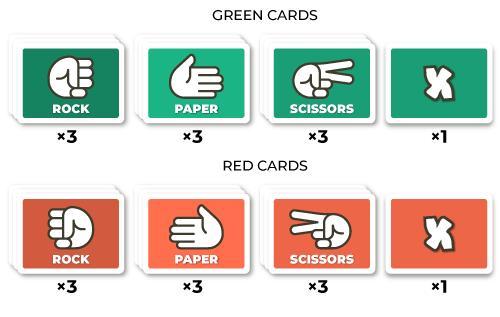
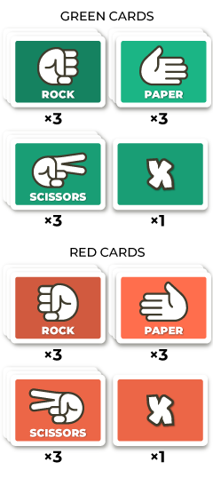

How to play
Now We Flip is the "Memory" game meets the "Rock, Paper, Scissors".
There are 20 cards in the game, 10 in green and 10 in red colour. Each of the colour sets consits of 3 different suits of 3 cards with Rock, Paper and Scissors symbols on them, and 1 card with an X symbol.
 Cards are randomly placed face-down.
The player assumes the control of the green side and by flipping face-up 2 cards at the time, tries to find matching pairs and eliminate red cards in a “Rock, Paper, Scissors” style match.Also, click here if you want to learn how to play 'Rock, Paper, Scissors'.
The matching pair is 2 cards that meet the following conditions:
- Cards are in different colours (red and green).
- Cards have different symbols (ex. Rock and Paper).
- None of the cards is an X card.
A pair of cards that doesn’t meet the above conditions is called a neutral pair.
Flipping the matching card pair makes the 2 cards battle and the winning card is determined according to the “Rock, Paper, Scissors” rules (Rock beats Scissors, Scissors beat Paper, Paper beats Rock). The winning card stays in the game, the loosing card is removed. Therefore the player needs to try to remember the position of the cards, in order to flip pairs that will result in red cards being eliminated and avoid pairs that would eliminate green cards. In case of the neutral card pair being flipped, there is a draw and both cards stay in the game.
After every 2-card flip the player receives or loses some points. The rules for adding or deducting points are as follows:
- Winning pair (green card beats the red card) - 3 points added.
- Loosing pair (red card beats the green card) - 2 points deducted.
- Neutral pair - 1 point deducted (this forces the player to actively look for winning pairs).
The little circle icons help to keep track of the cards lost for both green and red colours.
There are two X cards in the game, these are neutral cards and create neutral pair when at least one of them is flipped.
The objective of the game is to eliminate two full suits of red cards (ex. 3 Rock cards and 3 Paper cards). The player loses the game if two full suits of green cards have been eliminated.
Play Menu